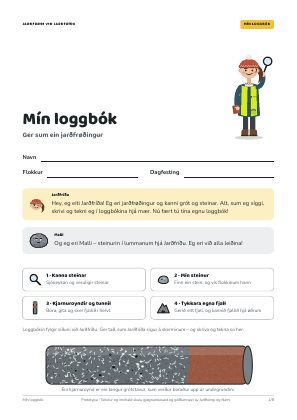
Mín loggbók
8 síður · ein til hvønn næming
Lat uppEg eri jarðfrøðingur og kanni grót og steinar. Nú skulu vit gera ein tunnil gjøgnum eitt fjall. Kunnu tit hjálpa mær at finna besta staðið?
Malli, steinurin í lummanum hjá mær, er eisini við.
Psst! Trýst á Malla niðri í horninum – ella kasta hann.Í skeiðinum læra næmingarnir at eygleiða grót, sum ein jarðfrøðingur ger.
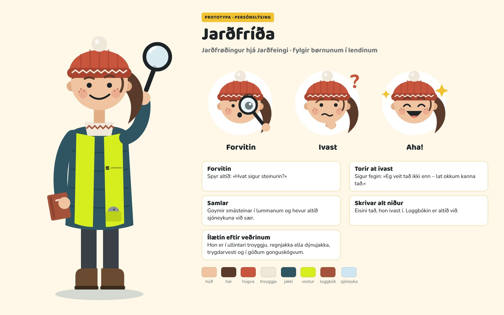
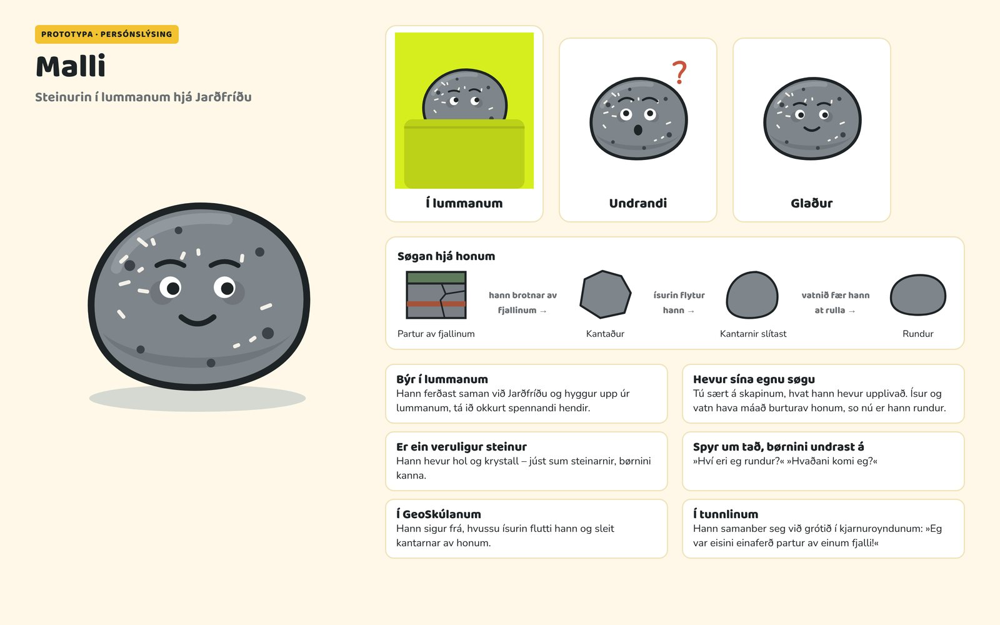
Jarðfríða er ein tekning. Irena er jarðfrøðingur hjá Jarðfeingi. Hon kannar kjarnuroyndir á Hjalla.
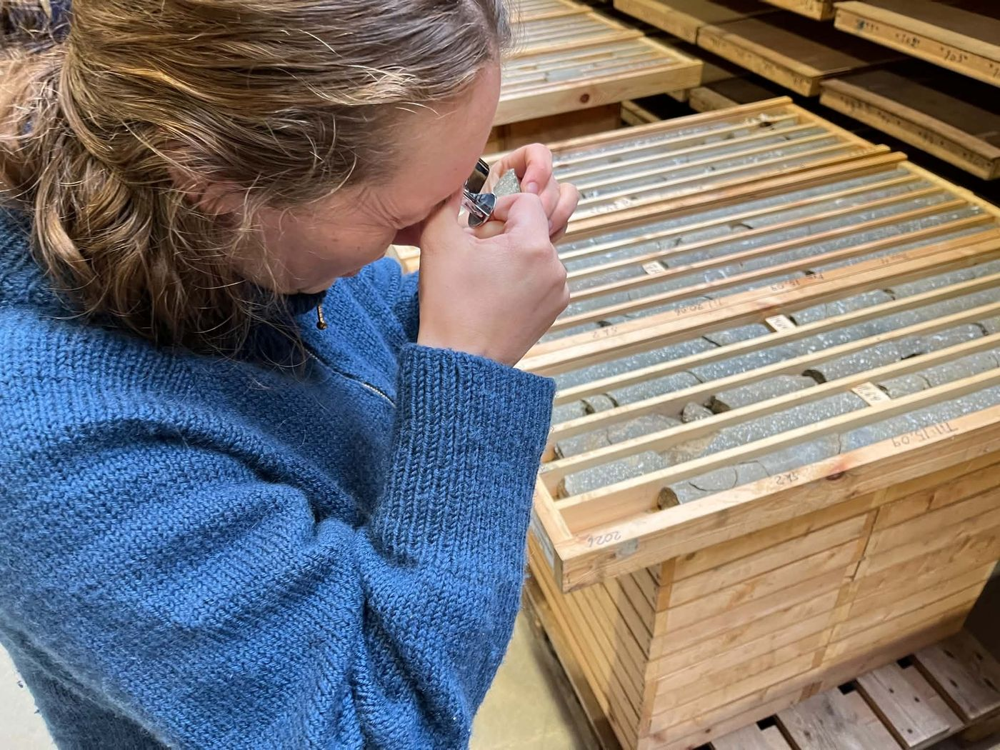
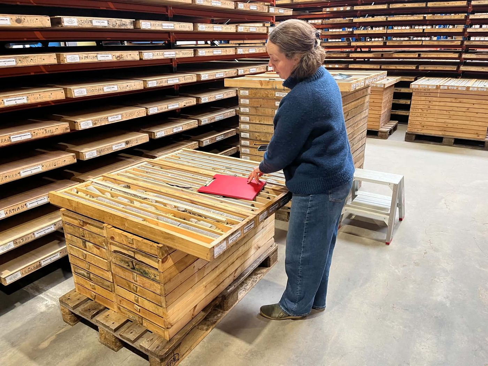
Í skeiðinum læra næmingarnir at eygleiða grót, sum ein jarðfrøðingur ger. Tey fylgja Jarðfríðu og steininum Malla á skerminum og kanna veruligar steinar. Síðan bora tey í eitt fjall, gita, hvussu tað sær út innaní, og skera tað í helvt fyri at síggja, um tey høvdu rætt.
Loggbókin fylgir síðuni við Jarðfríðu. Ger tað, sum Jarðfríða sigur á skerminum – og skriva og tekna so her.

8 síður · ein til hvønn næming
Lat upp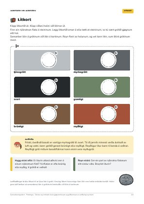
Prenta tey í litum, eitt sett til hvønn bólk.
Lat upp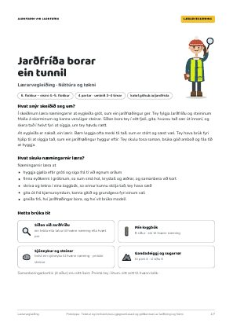
Náttúra og tøkni · 6. flokkur – eisini 4.–5. flokkur
Lat upp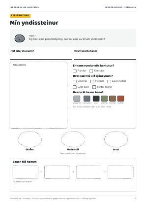
Mín yndissteinur
Lat upp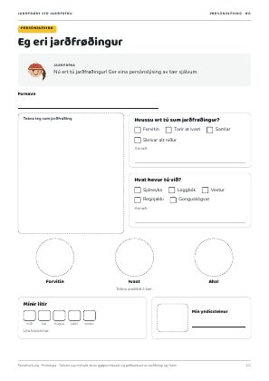
Eg eri jarðfrøðingur
Lat uppJarðfríða»Hetta er ein kjarnuroynd. Hon vísir grót, sum er borað úr fjallinum. Við sjóneykuni síggi eg smálutir, sum eg annars ikki síggi.«
Flyt sjóneykuna eftir grótinum. Trýst, tá ið tú finnur okkurt.
Flyt sjóneykuna eftir myndini. Hvat sært tú?
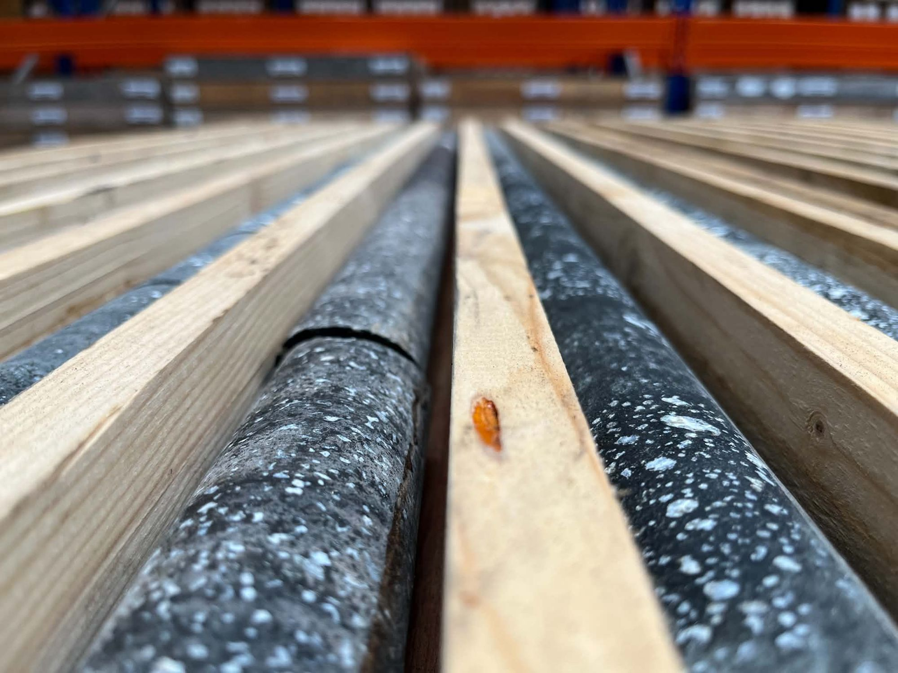
Jarðfríða»Nú skulu tit hyggja at veruligum steinum. Teir kunnu tit nerta við!«
Gott ráð: Ger steinin eitt sindur vátan. So síggja tit litirnar betur.
Malli»Eg havi eisini hol og krystall. Kanst tú finna tey á mær?«
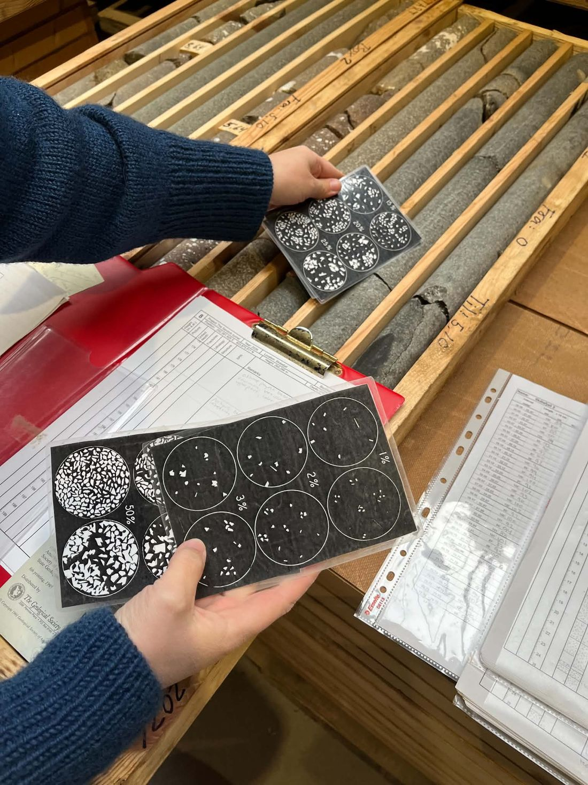
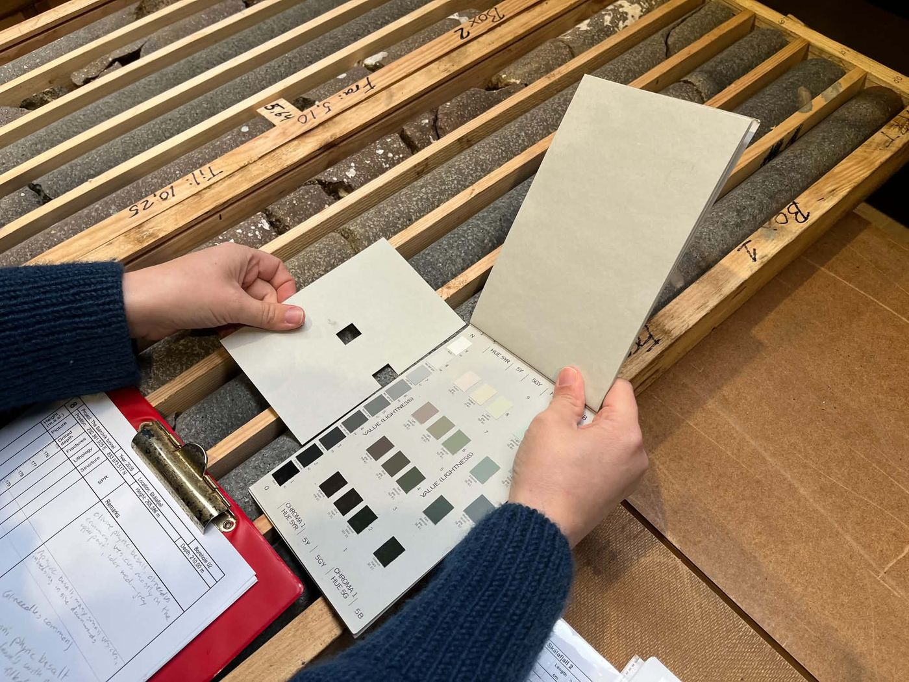
Jarðfríða»Nú ert tú jarðfrøðingur! Finn ein stein, og vís flokkinum hann.«
Malli»Ísur og vatn hava máað burturav mær, so nú eri eg rundur. Er tín steinur rundur ella kantutur?«
Malli»Eg havi eina persónslýsing. Ger nú eina av tínum yndissteini!«
Vel tín yndisstein. Hygg væl at honum, og fyll út.
Jarðfríða»Nú ert tú jarðfrøðingur! Ger eina persónslýsing av tær sjálvum.«
Vís flokkinum persónslýsingarnar.
Hygg at steinunum hjá hinum: Finn ein stein við holum. Finn ein stein við ljósum krystallum. Finn ein reyðan stein. Finn ein rundan stein og ein kantutan stein.
Padlet-veggurin verður ruddaður av og á.
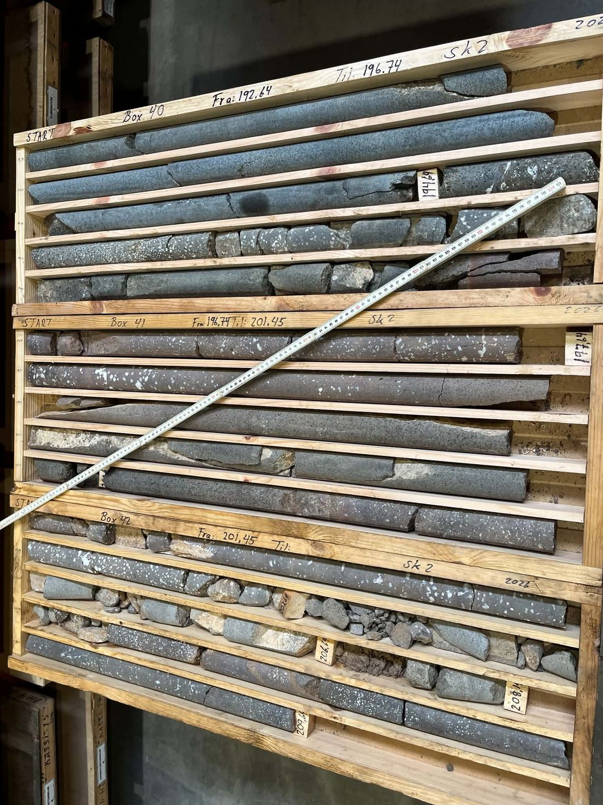
Irena skrivar tað, hon sær, í ein logg. Tey, sum gera tunnilin, lesa tað seinni.
Jarðfríða»Vit skulu gera ein tunnil gjøgnum fjallið. Men vit síggja ikki inn í fjallið. Tí bora vit og taka kjarnuroyndir upp.«
Trýst á B1, B2 og B3 fyri at bora.
Tosið saman: Er reytt í øllum trimum kjarnuroyndunum? Liggur reyða lagið í somu hædd í øllum trimum?
Hvussu heldur tú, at fjallið sær út innaní? Trýst og sí, um tú hevði rætt. Finn so besta staðið til tunnilin.
Malli»Eg var eisini einaferð partur av einum fjalli!«
Jarðfríða»Best er, at tunnilin í hesum døminum gongur gjøgnum støðugt grót. Reyða lagið er bleytari og kann krevja meira trygging.«
Jarðfríða»Nú skulu tit sjálv vera jarðfrøðingar! Tit gera eitt fjall úr gandadeiggi. Síðan skal eitt annað par finna fram til, hvat er inni í fjallinum hjá tykkum.«
Loyndarmál! Sigið ikki hinum, hvussu fjallið hjá tykkum sær út innaní.
Býtið um fjall við eitt annað par. Nú skulu tit kanna fjallið hjá teimum.
Jarðfríða»Hyggið væl at kjarnuroyndunum. Hvørjir litir síggja tit? Hvussu liggja løgini?«
Teknið, hvussu tit halda, at fjallið sær út innaní. Brúkið litirnar úr kjarnuroyndunum.
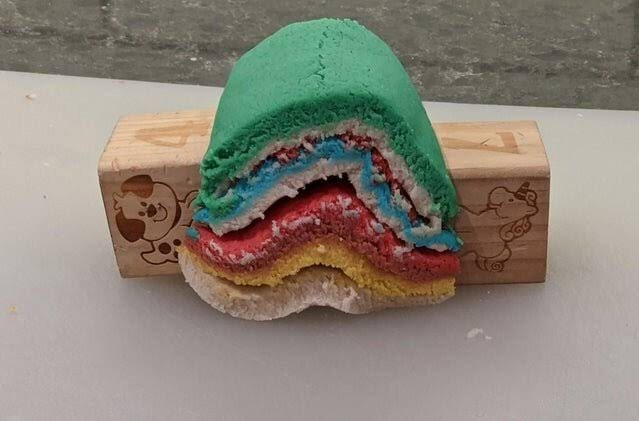
Tit hava kannað steinar, tikið kjarnuroyndir og funnið fram til, hvat er inni í einum fjalli.
MalliTú kanst eisini spyrja meg! Eg havi hol og krystall – og eina langa søgu.
Í skeiðinum læra næmingarnir at eygleiða grót, sum ein jarðfrøðingur ger. Tey fylgja Jarðfríðu og steininum Malla á skerminum og kanna veruligar steinar. Síðan bora tey í eitt fjall, gita, hvussu tað sær út innaní, og skera tað í helvt fyri at síggja, um tey høvdu rætt.
At eygleiða er nakað, ein lærir. Børn leggja ofta merki til tað, sum er stórt og sæst væl. Tey hava brúk fyri hjálp til at síggja tað, sum ein jarðfrøðingur hyggur eftir: Tey skulu tosa saman, brúka góð amboð og fáa tíð at hyggja.
Næmingarnir læra at
Samanberingarkortini (4 síður) eru eitt íkast. Prenta tey í litum, eitt sett til hvønn bólk.
Skeiðið hevur fýra partar. Hvør partur á síðuni hevur sínar síður í loggbókini. Næmingarnir gera tað, sum Jarðfríða sigur á skerminum, og skriva og tekna síðan í loggbókina.
| Partur | Á skerminum | Verkligt arbeiði | Loggbók | Tíð |
|---|---|---|---|---|
| 1 · Kanna steinar | Næmingarnir kanna eina kjarnuroynd við sjóneyku og finna seks eyðkenni. | Næmingarnir nerta við ein stein, kanna hann við sjóneyku og tekna hann. | s. 2–3 | Uml. 45 min |
| 2 · Mín steinur | Næmingarnir leggja eina mynd av sínum steini á Padlet-veggin hjá flokkinum. | Næmingarnir finna ein stein heima ella við skúlan og kanna hann. | s. 4 | Heima + uml. 15 min |
| 3 · Kjarnuroyndir og tunnil | Næmingarnir bora tríggjar kjarnuroyndir í fjallið hjá Jarðfríðu, meta um, hvussu løgini halda fram inni í fjallinum, og velja eina leið til tunnilin. Síðan verður fjallið skorið í helvt, so tey kunnu kanna metingina. | – | s. 5–6 | Uml. 30 min |
| 4 · Tykkara egna fjall | – | Tvey og tvey gera næmingarnir eitt fjall úr gandadeiggi. Síðan býta pørini um fjall, bora tríggjar kjarnuroyndir, tekna eina meting av løgunum inni í fjallinum og skera at enda fjallið í helvt. | s. 7–8 | 60–90 min |
Í 3. og 4. parti er raðfylgjan týdningarmikil. Næmingarnir skulu tekna sítt gitt, áðrenn tey skera fjallið. Síðan samanbera tey tekningina við tað, sum tey síggja.
Í loggbókini er gitið merkt FYRST og skeringin SÍÐAN. Á síðu 8 eru báðar tekningarnar – Okkara gitt og Soleiðis var tað – beint undir hvørjari aðrari, so næmingarnir lætt kunnu samanbera tær.
Til 1. part er gott at hava nakrar ymiskar steinar, sum næmingarnir kunnu halda á og kanna. Hava tit sjóneykur, kunnu næmingarnir brúka tær saman við steinunum.
Til 2. part skulu næmingarnir finna ein stein, annaðhvørt heima ella nær skúlanum. Steinurin eigur at vera ein vanligur, leysur steinur, sum er rundur ella avrundaður – ikki eitt fýrkantað ella tilskorið grótpetti.
Til 4. part skal gandadeiggið helst gerast frammanundan.
Um flokkurin fær høvi at vitja Jarðfeingi ella kanna veruligar kjarnuroyndir, kunnu tit leita eftir teimum somu eyðkennunum sum á skerminum. Tit kunnu til dømis:
Skeiðið byggir á námsætlanina í náttúru og tøkni frá 4. til 6. floksstig. Tað arbeiðir mest við tveimum kjarnuøkjum: Náttúruvísindaligur arbeiðs- og hugsanarháttur og Jørðin og lívið á jørðini.
»Kjarnaøkið náttúruvísindaligur arbeiðs- og hugsanarháttur snýr seg um at granska, eygleiða, kanna, gera støddfrøðiligar uppsetingar (modellera) úr gerandisdegnum, samskifta og seta í frásjón.«
Fýra av førleikamálunum hóska serliga væl til skeiðið:
| Førleikamál | Soleiðis arbeiða næmingarnir við tí | Partur |
|---|---|---|
| at undrast, savna upplýsingar, seta spurningar og gera hypotesur, greina úrslit og finna møgulig svar | Næmingarnir gita, hvussu fjallið sær út innaní, og tekna gitið. Síðan skera tey fjallið í helvt og kanna, um tey høvdu rætt. | 3·4 |
| at viðgera dátur, greina vitan, skyna á keldutilfari og grundgeva fyri úrslitum | Næmingarnir samanbera tríggjar kjarnuroyndir, binda løgini saman og grundgeva fyri, hvar tunnilin skal ganga. | 3 |
| at samanbera modell við eygleiðingar, at lýsa bæði ítøkilig og úrtøkilig fyribrigdi og at greiða frá, hví modell verða brúkt | Fjallið úr gandadeiggi er eitt modell. Næmingarnir samanbera gitið við tað, sum tey síggja, tá ið tey skera. Tey tosa um, hví jarðfrøðingar bora: Eitt veruligt fjall kann ikki skerast í helvt. | 3·4 |
| at kanna og lýsa jarðfrøði og ymisk landsløg | Næmingarnir kanna basalt og finna smá hol, krystall og royðugrót. Í søguni hjá Malla síggja tey, hvussu ísur og vatn slíta steinar. | 1·2·3 |
Í leiðbeiningini til námsætlanina stendur eisini:
»Næmingarnir kunnu kanna, hvørja ávirkan tær ymsu tíðirnar hava havt á føroyska landslagið, bæði á sjógvi og landi, og hvussu landslagið er bygt upp av fláum, lindum og innskotum.«
Fjallið hjá Jarðfríðu er bygt upp á sama hátt: av basaltfláum við royðugrót ímillum.
Kelda: Nám. Náttúra og tøkni 4.–6. floksstig – Leiðbeining til lærarar. namsaetlanir.fo/nattura-og-tokni
JarðfríðaTá ið eg kanni grót, skrivi og tekni eg altíð í loggbókina. Viðhvørt giti eg skeivt – so rætti eg tað. Soleiðis arbeiða jarðfrøðingar.
Loggbókin er ikki ein roynd. Næmingarnir skriva og tekna á sín egna hátt, og her er einki svar skeivt. Tað týdningarmikla er, at tey kunnu siga, hví tey halda, sum tey gera.
| Partur | Spurningar |
|---|---|
| 1 · Kanna steinar | »Hvat sært tú nú, sum tú ikki sást uttan sjóneyku?« · »Er steinurin eins innaní og uttaná?« · »Hvat undrast tú á?« |
| 2 · Mín steinur | »Hvar í søguni hjá Malla er tín steinur? Hví heldur tú tað?« · »Hvar hevur tann rundasti steinurin ligið?« |
| 3 · Kjarnuroyndir og tunnil | »Liggur reyða lagið í somu hædd í øllum trimum kjarnuroyndunum?« · »Hvat í kjarnuroyndunum fekk teg at velja júst hetta staðið?« |
| 4 · Tykkara egna fjall | »Hvat passaði á tekningini? Hvat kom óvart á tykkum?« · »Hví bora jarðfrøðingar, áðrenn teir gera ein tunnil?« |
MalliTú kanst eisini spyrja meg! Eg havi hol og krystall – og eina langa søgu.
Talvan kann hjálpa tær at síggja, hvar næmingarnir eru, meðan tey arbeiða. Brúka hana ikki til at geva karakter.
| Hyggja sum í gerandisdegnum | Eru á veg | Hyggja sum ein jarðfrøðingur | |
|---|---|---|---|
| Leggja merki til | Sigur: »Hann er gráur og pentur.« | Sær smá hol og ljós korn. | Sigur frá holum, krystallum og kornum og samanber við kortini. |
| Vænta | Gitir uttan at grundgeva: »Hann er úr fjøruni.« | »Holini eru kanska eftir gass.« | Sigur, hvussu grótið kann vera vorðið til, út frá tí, sum sæst. |
| Skriva niður | Hyggur, men skrivar og teknar einki. | Skrivar og teknar, men ikki altíð so, at onnur skilja tað. | Skrivar og teknar so greitt, at onnur kunnu brúka loggbókina. |
| Halda fast | Hyggur stutt og fer víðari. | Kemur aftur til grótið og spyr. | Samanber fleiri kjarnuroyndir og heldur fast við spurningin. |
Talvan byggir á Eberbach, C. & Crowley, K. (2009). From everyday to scientific observation. Review of Educational Research, 79(1), 39–68. Ráðini um at peika og væta grótið byggja á Goodwin, C. (1994). Professional vision. American Anthropologist, 96(3), 606–633.
Fjallið hjá Jarðfríðu (3. partur). Reytt er í øllum trimum kjarnuroyndunum, men ikki í somu hædd. Við B1 liggur reyða lagið umleið 3,5 cm yvir borðinum, við B2 og B3 umleið 5 cm. Lagið hallar sostatt. Á skerminum fáa næmingarnir »Gott val!«, tá ið tunnilin gongur gjøgnum gráa ella svarta basaltið niðanfyri reyða lagið alla leiðina. Liggur tunnilin í reyða laginum ella heilt uppi í tindinum, fáa tey eitt ráð um at royna aðrastaðni.
Sorteringsspælið (samanberingarkortini s. 3). Ein møgulig røð frá kantutum til rundan er D – F – A – E – B – C. Aðrar røðir kunnu eisini vera góðar, um næmingarnir kunnu grundgeva fyri teimum.
Søgan hjá Malla. Steinar, sum ísurin hevur flutt, eru ofta bert lítið avrundaðir. Heilt rundir steinar hava ofta ligið leingi í á ella í fjøru.
Kortini og eyðkennini. Her er einki rætt svar. Svarið veldst um grótið, sum næmingarnir kanna. Bið tey grundgeva fyri valinum.
8 síður · ein til hvønn næming
Lat uppPrenta tey í litum, eitt sett til hvønn bólk.
Lat uppNáttúra og tøkni · 6. flokkur – eisini 4.–5. flokkur
Lat uppMín yndissteinur
Lat uppEg eri jarðfrøðingur
Lat uppKortini eru eitt íkast. Tey kunnu brúkast í 1. parti, tá ið næmingarnir kanna veruligar steinar, og í 2. parti, tá ið tey leggja steinar í røð frá kantutum til rundan. Kortini hjálpa næmingunum at samanbera og at finna orð fyri tí, tey síggja.
Í 2. parti kunnu næmingarnir leggja eina mynd av sínum steini á Padlet-veggin. Veggurin er longu settur inn í tilfarið, og allir flokkar brúka sama vegg. Lærarin skal tí ikki gera ein nýggjan vegg.
Padlet-veggurin verður ruddaður av og á.
Myndirnar verða góðkendar, áðrenn tær verða sjónligar á veggnum. Bið næmingarnar bert taka myndir av steininum – ikki av sær sjálvum ella øðrum – og bert skriva fornavn.
Kanna frammanundan, um skúlin hevur loyvi at brúka Padlet saman við næmingum. Er veggurin ov lítil á skerminum, kann hann latast upp í nýggjum vindeyga við knøttinum undir veggnum.
Henda uppskriftin er til umleið fýra fjøll:
Elt deiggið væl og být tað í fýra partar. Lita partarnar við matliti. Brúka reytt og grønt og tveir aðrar litir, til dømis svart og hvítt ella ólitað deiggj.
Ger helst deiggið dagin fyri og goym tað í lufttættum posa. Er deiggið ov klístrut, kann eitt sindur av mjøli eltast upp í tað. Tá festist deiggið heldur ikki so lætt inni í súgvirørunum, tá ið næmingarnir bora.
Til hvørt par skulu tit hava:
Hvørt par byggir eitt fjall úr fleiri løgum av gandadeiggi.
Bið næmingarnar ikki leggja øll løgini heilt vatnrætt. Eitt lag kann til dømis liggja eitt sindur skák, ella vera tjykkari øðrumegin enn hinumegin. Tá verða tær tríggjar kjarnuroyndirnar ymiskar, og næmingarnir noyðast at hugsa um, hvussu løgini kunnu halda fram millum boriholini.
Tá ið fjøllini eru liðug, býta pørini um. Næmingarnir skulu sostatt kanna eitt fjall, sum tey ikki sjálv hava bygt.
Tey bora tríggjar kjarnuroyndir við súgvirørunum og seta tannstikkarnar B1, B2 og B3 við boriholini. Síðan hyggja tey at kjarnuroyndunum og tekna eina meting av, hvussu løgini liggja inni í fjallinum.
At enda verður fjallið skorið í helvt. Tá kunnu næmingarnir samanbera sína meting við tað, sum veruliga var inni í fjallinum.
Bíðið við at skera! Ansa eftir, at pørini hava teknað sítt gitt á síðu 8 í loggbókini, áðrenn tey skera fjallið í helvt. Endamálið er ikki at gita alt rætt, men at brúka tær upplýsingar, sum kjarnuroyndirnar geva, til at gera eina grundaða meting.
Kjarnuroyndin og fjallið hjá Jarðfríðu eru einføld, uppspunnin dømi, sum eru gjørd til undirvísing. Arbeiðið hjá Jarðfeingi og føroysk jarðfrøði hava givið íblástur til tilfarið.
Áðrenn tilfarið verður tikið endaliga í nýtslu, eigur ein jarðfrøðingur at kanna tað jarðfrøðiliga innihaldið.
Myndir frá Hjalla: Karina Toftegaard. Irena, jarðfrøðingur hjá Jarðfeingi, er á myndunum.
MalliTú kanst eisini spyrja meg! Eg havi hol og krystall – og eina langa søgu.